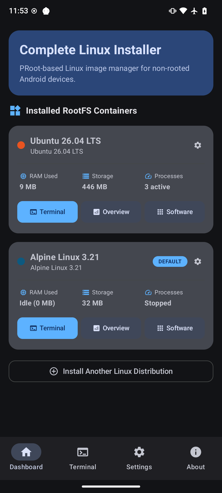

Complete Linux Installer brings 7 official Linux distributions (Ubuntu, Debian, Fedora, Alpine, Arch, Kali, Void), concurrent multi-tab terminal emulation, XFCE desktop GUI, and one-click developer stacks directly to your Android device - 100% rootless!

From multi-container management to concurrent terminal tabs and 1-click desktop stacks, explore the native Android interface.
Manage multiple isolated Linux environments on a single Android device. Start, stop, monitor, or launch interactive sessions for each container independently with clear status indicators and quick action shortcuts.
Turn any Android phone or tablet into a full graphical desktop environment or portable Linux development workstation.
Operates entirely in Android user-space via native PRoot ptrace system call interception. No root access, bootloader unlocking, or Knox tripping required.
First-class support for Ubuntu, Debian 12, Fedora 44, Alpine Linux 3.21, Arch Linux, Kali Linux, and Void Linux with automatic mirror detection and rootfs SHA256 integrity verification.
Built-in VT100/XTerm terminal emulator supporting multiple simultaneous POSIX PTY shell sessions, Termux-style 7-column pinned hotkey grid, custom hotkey editor, and session stop protection.
One-click installation of a lightweight XFCE 4 desktop environment with TigerVNC server and web-based noVNC streaming for windowed desktop productivity on phone or tablet screens.
Live hardware gauges displaying instantaneous CPU utilization, RAM consumption dials, internal storage tracking, and active listening port detection.
Automatic mounting of Android storage (/sdcard) and external SD cards (/media/sdcard) alongside Link2Symlink SELinux compatibility for easy file sharing.
Deploy the ideal operating system for your workflow, from ultra-lightweight containers to bleeding-edge rolling environments.
The standard in Linux computing. Features Long-Term Support stability, an enormous software package repository, and broad toolchain compatibility.
The rock-solid universal operating system. Renowned for mission-critical reliability, predictable packages, and rock-solid system stability.
Modern Red Hat-family distribution delivering the latest upstream innovations, GCC toolchains, and system libraries via the high-performance DNF package manager.
Ultra-compact, security-oriented distribution based on musl libc and busybox. The rootfs is roughly 5MB, making it lightning-fast to download and launch.
Bleeding-edge rolling release distribution delivering the latest upstream Linux software packages and kernels via the blazing fast pacman package manager.
The gold standard in information security, penetration testing, and digital forensics. Access thousands of ethical hacking and security auditing packages on your phone.
An independent, general-purpose Linux distribution built from scratch. Utilizes the lightweight XBPS package manager and minimalist runit init architecture.
Install complete desktop environments and CLI developer stacks with a single tap in the Software Hub.
Full-featured, lightweight graphical desktop environment with XFCE4, TigerVNC server, and browser-accessible noVNC. Includes mouse emulation, clipboard sync, and window manager.
View Installation Logic →ubuntu@android:~$ vncserver :1 -geometry 1280x720
New 'android:1 (ubuntu)' desktop is android:1
ubuntu@android:~$ websockify --web /usr/share/novnc 6080 localhost:5901
WebSocket server settings:
- Listen on :6080
- Web server active at /usr/share/novnc
Pull and run standard container images from Docker Hub directly in user space without root access, unlocked bootloaders, or Linux kernel cgroups. Includes native CLI delegation for both docker and docker-compose commands.
View Installation Logic →ubuntu@android:~$ docker pull alpine:latest
latest: Pulling from library/alpine
Digest: sha256:beef... Status: Downloaded newer image
ubuntu@android:~$ docker run -it alpine sh
/ # echo "Hello from Docker in user-space!"
Hello from Docker in user-space!
Run a full Visual Studio Code IDE inside your container, accessible from any browser on your tablet, phone, or local Wi-Fi. Includes the full VS Code extension marketplace, syntax highlighting, Git integration, and integrated terminal.
View Installation Logic →ubuntu@android:~$ code-server --bind-addr 0.0.0.0:8443 --auth none
[INFO] HTTP server listening on http://0.0.0.0:8443
[INFO] VS Code Server active
browser:~$ open http://192.168.1.50:8443
Connected to Remote VS Code IDE [OK]
Share your interactive Linux shell to any web browser on your local network with a single tap. Ideal for quick remote debugging, coding from a desktop browser, or presenting CLI demos without requiring SSH keys or clients.
View Installation Logic →ubuntu@android:~$ ttyd -p 8080 -W bash
[INFO] Listening on port: 8080
browser:~$ open http://192.168.1.50:8080
Interactive Web Terminal Session Established [OK]
Modern JavaScript/TypeScript development runtime environment complete with Node.js LTS, npm, yarn, Git, and build essentials.
View Installation Logic →ubuntu@android:~$ node -v
v20.18.0
ubuntu@android:~$ npm --version
10.8.2
Modern Python development environment with Python 3, pip3, virtualenv, GCC C/C++ compiler tools, Git, and Neovim.
View Installation Logic →ubuntu@android:~$ python3 --version
Python 3.12.3
ubuntu@android:~$ pip3 list
Package Version --- pip 24.0, setuptools 69.5.1
Build and debug Android applications inside Linux on Android using OpenJDK 17, ADB, Fastboot, Gradle, and Git.
View Installation Logic →ubuntu@android:~$ java -version
openjdk version "17.0.12" 2024-07-16
ubuntu@android:~$ adb devices
List of devices attached
Turn your Android phone into a local HTTP web server and embedded database system powered by NGINX and SQLite3.
View Installation Logic →ubuntu@android:~$ service nginx start
* Starting NGINX web server nginx ... [ OK ]
ubuntu@android:~$ curl -I http://localhost
HTTP/1.1 200 OK Server: nginx/1.24.0
Access your Android Linux environment remotely from your laptop or PC command line over local Wi-Fi or LAN.
View Installation Logic →ubuntu@android:~$ /usr/sbin/sshd -p 2222
Server listening on port 2222.
user@desktop:~$ ssh ubuntu@192.168.1.50 -p 2222
Welcome to Ubuntu 24.04 LTS (GNU/Linux aarch64)
From early XDA Developers root chroot scripts to a modern 100% rootless Jetpack Compose application.
First created on XDA Developers as the "Ubuntu Installer" and "Complete Linux Installer" project, pioneering chroot-based Linux deployments on early Android devices.
Expanded distribution images (Ubuntu, Debian, Fedora, Arch) and custom rootfs image mounting tools hosted on linuxonandroid.com.
Rebuilt from the ground up: complete rootless operation via PRoot ptrace, 7 official Linux distributions, concurrent multi-tab POSIX PTY terminal, Jetpack Compose Material3 UI, and arch-aware mirror automation.
Setting up Linux on your Android phone takes less than 2 minutes.
Install Complete Linux Installer directly from F-Droid or the Google Play Store, or join open beta testing for pre-release builds.
Select from Ubuntu, Debian, Fedora, Alpine, Arch, Kali, or Void. The wizard automatically detects your architecture (ARM64, x86_64, ARMv7) and downloads verified rootfs tarballs.
Launch concurrent terminal sessions, monitor hardware dials in real-time, or install the XFCE desktop GUI and developer stacks in one click.